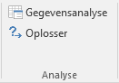
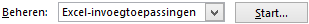

Dit onderdeel bevat aanwijzingen om te controleren of het onderdeel
Oplosser binnen Excel beschikbaar en indien nodig hoe deze beschikbaar
gesteld kan worden.
De Oplosser is een zogenaamde invoegtoepassing welke niet
standaard via het menu van Excel beschikbaar is. Wanneer de Oplosser
niet op het lint aanwezig is dan moet deze eerst geactiveerd worden. Dit is een
eenmalige actie.
Kies tab Gegevens en controleer of de groep
Analyse bestaat en zoja of hierin de
Oplosser aanwezig is.
Figuur 1: Groep Analyse met Oplosser op het lint

Waarschuwing: Ga alleen verder wanneer de groep
Analyse met Oplosser niet aanwezig
is.
Kies Bestand > Opties > Invoegtoepassingen
Er verschijnt een lijst met Microsoft Office
Invoegtoepassingen.
Selecteer onder in het scherm in het vak Beheren voor
Excel-invoegtoepassingen.
Figuur 2: Keuze soort invoegtoepassingen

Klik op Start....
Een lijst met beschikbare invoegtoepassingen wordt getoond.
Vink het selectievakje Oplosser-invoegtoepassing aan en klik op
OK.